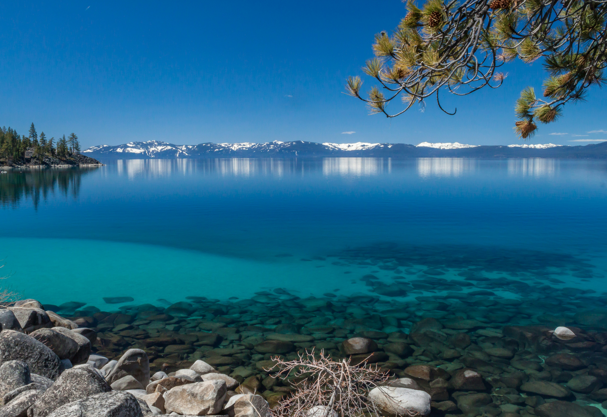

I love to travel and some of my favorite places to visit are:
Lake Tahoe
Reasons I love Lake Tahoe:
- snow!
- inner tubing
- hiking
When it comes to things to do in South Lake Tahoe, you can shred down the mountain from 10,067 ft. at Heavenly Mountain Resort’s peak or you can dive into the depths of Lake Tahoe. It’s more than 1600 ft. deep, making it one of the deepest lakes in North America. Needless to say, there are plenty of things to do in Lake Tahoe above and below the surface. All parts of Lake Tahoe are beautiful and have something unique to offer. South Lake Tahoe is popular for its ski resorts like Heavenly, Sierra at Tahoe and Kirkwood ski resorts. South Lake Tahoe is also popular for its restaurants, shopping, casino resorts and vibrant nightlife.
Yellowstone National Park

Why I love Yellowstone:
- The Geysers
- The Black Bears
- The Buffalo
The drive to Lamar Valley requires some dangerous roads. But the result is amazing sunset views. The buffalo were so common along the roads in Yellowstone that our mantra became "If it ain't lickin the car, we aren't stopping."
Paris, France

Why I love Paris:
- The Architecture
- The Art
- The History
The architecture of Paris is truly beautiful. Paris is a city of foodies, and the French take their food very seriously. The city is home to some of the best restaurants in the world, and you can find everything from haute cuisine to street food here. The French are also known for their love of wine, and you can find a wide variety of wines in Paris.
Seoul, South Korea
Why Seoul is my favorite:
- The Food
- The Culture
- My Family
South Korea is home to what I consider some of the greatest food and culture in the world. I may or may not be a little biased, being a Korean myself. While the food and the fun may be great, I believe that South Korea is my favorite place mainly due to my family. There, I can see my grandparents, uncles, aunts, and cousins, many of whom I do not get to see often due to being overseas.
Miami, Florida
Why Miami is amazing:
- The Vibes
- The Weather
- The Beaches
While I may consider Korea my favorite place to go, the weather in Miami is truly unbeatable. With the warm weather and sunny skies, it's hard to find a place in the States like Miami. There is a reason why Florida's beaches are so popular all year round, and Miami really shows why. With crystal blue water and white sand, it's the ideal destination for anybody looking to have fun.